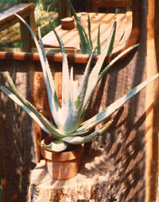

It's best to avoid getting sunburned, rather than endure the smiting consequences. But if you do spend too much time in the sun, try these five natural remedies to soothe your skin.
It's also wise to be proactive and take steps to protect your skin from sun damage, while still making sure you still get a healthy dose of sunshine. The sun is our chief source of vitamin D, which protects us from a variety of ailments, including osteoporosis, multiple sclerosis, diabetes, cancer and high blood pressure. Sunscreens block UVB rays, the wavelength that stimulates the skin's vitamin D production.
Ultraviolet light from the sun comes in two types: UVB waves, which are shorter, and UVA rays, which are longer and able to penetrate skin more deeply. Many products offer no protection from UVA rays, which are responsible for skin damage and aging. According to the Environmental Working Group, just 16 percent of sunscreens on the market are both safe and effective at blocking both UVA and UVB radiation. In fact, a sunscreen's SPF only reflects its ability to block UVB rays.
According to Michael F. Holick, of the Boston University School of Medicine, properly applied sunscreen reduces the skin's vitamin D production by 95 percent. Holick advises knowing your skin's sensitivity, and acting accordingly. For instance, if you turn pink after 30 minutes in the summer sun, then spending five to ten minutes in the sun (in a bathing suit) should generate plenty of vitamin D. After that, apply sunscreen, cover up or seek shade.
And be aware that all sunscreens are not created equal. Some sunscreen ingredients can cause skin irritation, while others could disrupt your body's endocrine systems. The U.S. Food and Drug Administration (FDA) regulates some sunscreen products as drugs, and some as cosmetics, which have less stringent approval requirements. While the FDA created a monograph for safer sunscreens in 1999, the guidelines were never finalized.
Many environmental groups have expressed concern that certain sunscreens contain 'micronized' ingredients, or nanoparticles, such as titanium dioxide and zinc oxide that are manipulated to smaller particle sizes. Some research on micronized titanium dioxide indicates that it may cause more DNA damage than larger titanium dioxide particles, particularly if it enters the body through cuts or inhalation. Because nanoparticles operate on the quantum level, their behavior and absorption by the body may differ from larger particles of the same substance because they're so small. To be safe, avoid products with micronized ingredients and never apply sunscreen to cuts.
To find out which products contain the safest ingredients and provide the best sun protection, check out these useful resources:
|
 MOTHER EARTH NEWS STAFF Aloe vera is famous for it's ability to speed the healing of radiation-induced burns, and you can use the gel straight from the plant. |
|
|